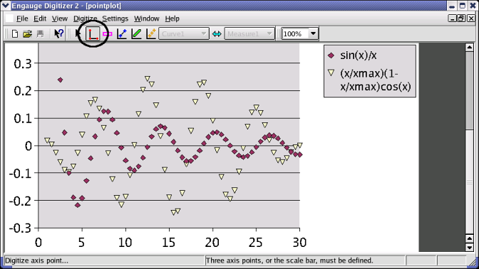
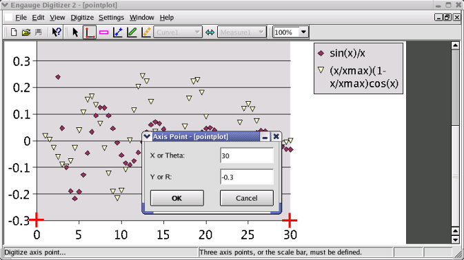
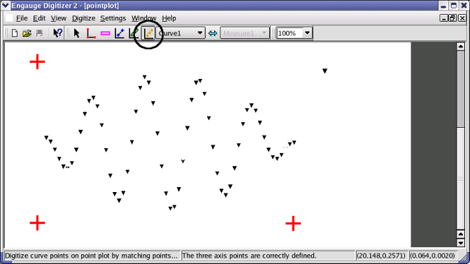
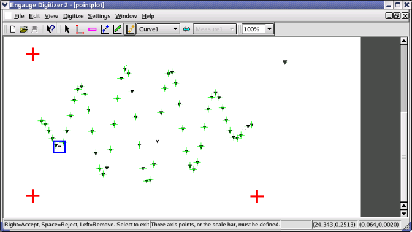
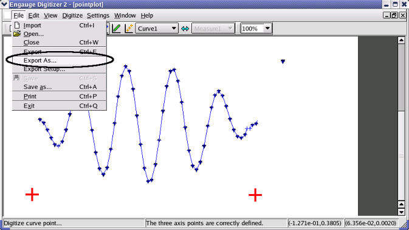

Engauge Digitizer - Automatic Point Graph Tutorial
Engauge Digitizer - Automatic Point Graph Tutorial
Engauge Digitizer - Automatic Point Graph Tutorial
Engauge Digitizer - Automatic Point Graph Tutorial| Warning: Not all point graphs work well when automatically matching points in Engauge. Before going any further, you may want to read about point match requirements. |
The following steps automatically digitize a linear cartesian graph with one curve.










